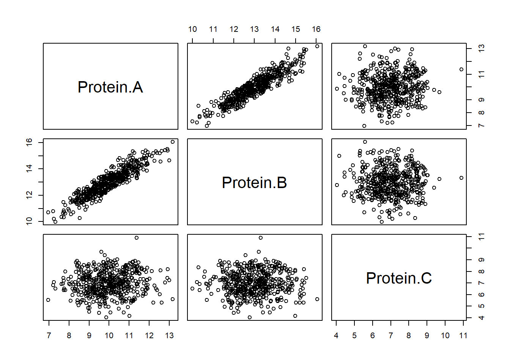
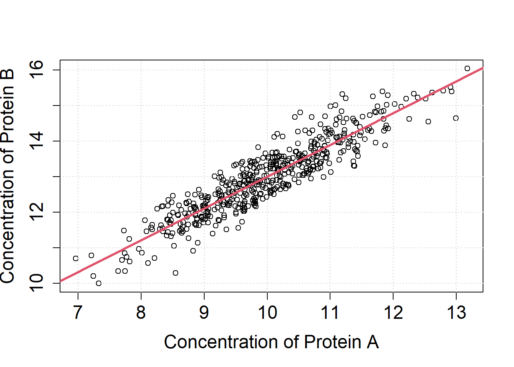

Correlation and Regression
Exercise
Exercise 6.1 (Correlation)
Assume Proteins A, B and C are members of a cellular pathway that is related to a certain disease. The concentration of these protein was measured in \(n=5000\) patients.
Read the corresponding data study2.csv into the R-environment.
X = read.table("data/study2.csv", sep=";", header=TRUE)
str(X)## 'data.frame': 500 obs. of 3 variables:
## $ Protein.A: num 10.7 11.7 10.3 11.9 10 ...
## $ Protein.B: num 13.5 14.8 12.8 14.4 13.2 ...
## $ Protein.C: num 7.06 7.34 8.73 6.53 7.68 ...Make scatter plots of each pair of proteins (plot).
plot(X)
Determine Pearson’s correlation between each pair of proteins (cor.test).
cor.test(X$Protein.A, X$Protein.B)
cor.test(X$Protein.A, X$Protein.C)
cor.test(X$Protein.B, X$Protein.C)##
## Pearson's product-moment correlation
##
## data: X$Protein.A and X$Protein.B
## t = 50.271, df = 498, p-value < 2.2e-16
## alternative hypothesis: true correlation is not equal to 0
## 95 percent confidence interval:
## 0.8982970 0.9273551
## sample estimates:
## cor
## 0.9139905
##
##
## Pearson's product-moment correlation
##
## data: X$Protein.A and X$Protein.C
## t = 1.9296, df = 498, p-value = 0.05423
## alternative hypothesis: true correlation is not equal to 0
## 95 percent confidence interval:
## -0.00155775 0.17253187
## sample estimates:
## cor
## 0.08614461
##
##
## Pearson's product-moment correlation
##
## data: X$Protein.B and X$Protein.C
## t = 0.28971, df = 498, p-value = 0.7722
## alternative hypothesis: true correlation is not equal to 0
## 95 percent confidence interval:
## -0.0747947 0.1005572
## sample estimates:
## cor
## 0.01298103Exercise 6.2 (Linear Regression)
From the correlation analysis, protein A appears to be related to protein B. From earlier research, it is known that protein B depends on protein A. Model the relation between the two proteins using a simple linear regression (lm).L1 = lm(X$Protein.B ~ X$Protein.A)Evaluate the summary over the linear model to check the goodness of fit.
summary(L1)##
## Call:
## lm(formula = X$Protein.B ~ X$Protein.A)
##
## Residuals:
## Min 1Q Median 3Q Max
## -1.41408 -0.30749 0.00183 0.28727 1.33353
##
## Coefficients:
## Estimate Std. Error t value Pr(>|t|)
## (Intercept) 4.03927 0.17893 22.57 <2e-16 ***
## X$Protein.A 0.89633 0.01783 50.27 <2e-16 ***
## ---
## Signif. codes: 0 '***' 0.001 '**' 0.01 '*' 0.05 '.' 0.1 ' ' 1
##
## Residual standard error: 0.4258 on 498 degrees of freedom
## Multiple R-squared: 0.8354, Adjusted R-squared: 0.835
## F-statistic: 2527 on 1 and 498 DF, p-value: < 2.2e-16Do you know the meaning behind each section of summary?
T-statistic
The t-Test checks the nullity of the coefficient.
Multiple R-squared
Percentage of variability explained by the model.
F-statistic
The F-Statistic checks if at least one of your coefficients is nonzero.
The output of the lm is a list which contains the estimates of the linear regression model. Use the latter to draw the regression line into the scatter plot (abline).
par(mfrow=c(1,1))
plot(X$Protein.A, X$Protein.B, cex.axis=1.5, cex.lab=1.5,
xlab="Concentration of Protein A",
ylab="Concentration of Protein B")
grid()
#The coefficients of the linear regression model
#L1$coefficients
abline(a=L1$coefficients[1], b=L1$coefficients[2], col=2, lwd=3)